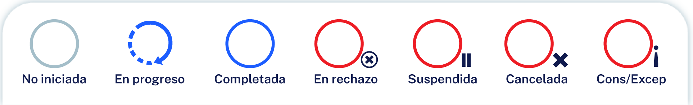

<div id="page-container">
      <ejs-diagram #diagram id="diagram" width="100%" height="700px" mode="SVG" [snapSettings]='snapSettings'
        [getConnectorDefaults]='getConnectorDefaults' (click)="click($event)" selectionChange="selectionChange"
        [getNodeDefaults] ='getNodeDefaults'
        (created)='created($event)'>
        <e-nodes>
          <e-node id='node1' [offsetX]=420 [offsetY]=0 [shape]='shape1' [ports]='port' [constraints]='nodeConstraints'>
            <e-node-annotations>
              <e-node-annotation content='Notarial' [offset]="offset" [horizontalAlignment]="horizontalAlignment"
                [verticalAlignment]="verticalAlignment" [margin]="margin"></e-node-annotation>
            </e-node-annotations>
          </e-node>
          <e-node id='node2' [offsetX]=100 [offsetY]=120 [shape]='shape2' [ports]='port2' [constraints]='nodeConstraints'>
            <e-node-annotations>
              <e-node-annotation content='Ingreso Solicitud' [offset]="offset" [horizontalAlignment]="horizontalAlignment"
                [verticalAlignment]="verticalAlignment" [margin]="margin"></e-node-annotation>
            </e-node-annotations>
          </e-node>
          <e-node id='node3' [offsetX]=740 [offsetY]=120 [shape]='shape3' [ports]='port4' [constraints]='nodeConstraints'>
            <e-node-annotations>
              <e-node-annotation content='Cotejo y firma' [offset]="offset" [horizontalAlignment]="horizontalAlignment"
                [verticalAlignment]="verticalAlignment" [margin]="margin"></e-node-annotation>
            </e-node-annotations>
          </e-node>
          <e-node id='node4' [offsetX]=880 [offsetY]=120 [shape]='shape4' [constraints]='nodeConstraints'>
            <e-node-annotations>
              <e-node-annotation content='Dispersión de fondos' [offset]="offset" [horizontalAlignment]="horizontalAlignment"
                [verticalAlignment]="verticalAlignment" [margin]="margin"></e-node-annotation>
            </e-node-annotations>
          </e-node>
          <e-node id='node5' [offsetX]=1020 [offsetY]=120 [shape]='shape5' [constraints]='nodeConstraints'>
            <e-node-annotations>
              <e-node-annotation content='Postfirma' [offset]="offset" [horizontalAlignment]="horizontalAlignment"
                [verticalAlignment]="verticalAlignment" [margin]="margin"></e-node-annotation>
            </e-node-annotations>
          </e-node>
          <e-node id='node6' [offsetX]=200 [offsetY]=300 [shape]='shape6' [ports]='port6' [constraints]='nodeConstraints'>
            <e-node-annotations>
              <e-node-annotation content='Avalúos' [offset]="offset" [horizontalAlignment]="horizontalAlignment"
                [verticalAlignment]="verticalAlignment" [margin]="margin"></e-node-annotation>
            </e-node-annotations>
          </e-node>
          <e-node id='node7' [offsetX]=340 [offsetY]=300 [shape]='shape7' [ports]='port8' [constraints]='nodeConstraints'>
            <e-node-annotations>
              <e-node-annotation content='Cierre de cifras' [offset]="offset" [horizontalAlignment]="horizontalAlignment"
                [verticalAlignment]="verticalAlignment" [margin]="margin"></e-node-annotation>
            </e-node-annotations>
          </e-node>
          <e-node id='node8' [offsetX]=480 [offsetY]=300 [shape]='shape8' [ports]='port8' [constraints]='nodeConstraints'>
            <e-node-annotations>
              <e-node-annotation content='Mesa de control SB' [offset]="offset" [horizontalAlignment]="horizontalAlignment"
                [verticalAlignment]="verticalAlignment" [margin]="margin"></e-node-annotation>
            </e-node-annotations>
          </e-node>
          <e-node id='node9' [offsetX]=640 [offsetY]=300 [shape]='shape9' [ports]='port6' [constraints]='nodeConstraints'>
            <e-node-annotations>
              <e-node-annotation content='Programación de firmas' [offset]="offset" [horizontalAlignment]="horizontalAlignment"
                [verticalAlignment]="verticalAlignment" [margin]="margin"></e-node-annotation>
            </e-node-annotations>
          </e-node>
        </e-nodes>
        <e-connectors>
          <e-connector id='connector' type='Orthogonal' sourceID='node1' sourcePortID='port' targetID='node2'
            targetPortID='port2'>
          </e-connector>
          <e-connector id='connector2' type='Orthogonal' sourceID='node1' sourcePortID='port3' targetID='node3'
            targetPortID='port4'>
          </e-connector>
          <e-connector id='connector3' type='Orthogonal' sourceID='node2' sourcePortID='port5' targetID='node6'
            targetPortID='port6'>
          </e-connector>
          <e-connector id='connector4' type='Orthogonal' sourceID='node6' sourcePortID='port7' targetID='node7'
            targetPortID='port8'>
          </e-connector>
          <e-connector id='connector5' type='Orthogonal' sourceID='node7' sourcePortID='port9' targetID='node8'
            targetPortID='port8'>
          </e-connector>
          <e-connector id='connector6' type='Orthogonal' sourceID='node8' sourcePortID='port9' targetID='node9'
            targetPortID='port6'>
          </e-connector>
          <e-connector id='connector7' type='Orthogonal' sourceID='node3' sourcePortID='port12' targetID='node9'
            targetPortID='port7'>
          </e-connector>
        </e-connectors>
      </ejs-diagram>
  <footer id="footer">
    
  </footer>
</div>


<ng-template #content let-modal>
	<div class="modal-header">
		<h4 class="modal-title" id="modal-basic-title">Opciones</h4>
		<button type="button" class="btn-close" aria-label="Close" (click)="modal.dismiss('Cross click')"></button>
	</div>
	<div class="modal-body">
		<form>
			<div class="mb-3">
				<label for="opciones">Selecciona una opción</label>
				<select #selectOpcion class="form-select" id="opciones" required [ngModel]="0" placehoder="Selecciona una opción">
          <option disabled selected value="0">Seleccione</option>
          <option value="1">En progreso</option>
          <option value="2">Completada</option>
          <option value="3">En rechazo</option>
          <option value="4">Suspendida</option>
          <option value="5">Cancelada</option>
          <option value="6">Cons/Excp</option>
        </select>
			</div>
		</form>
	</div>
	<div class="modal-footer">
		<button type="button" class="btn btn-outline-secondary" (click)="modal.close(selectOpcion.value)">Continuar</button>
	</div>
</ng-template>
